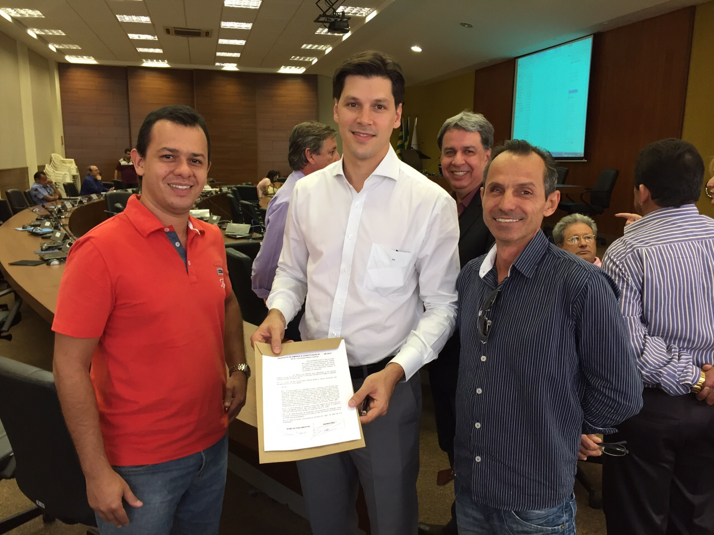

A proposta de emenda constitucional do deputado Luiz Carlos Heinze já conta com 126, das 171 assinaturas para sua criação.
Maio chegou ao fim com um balanço positivo. A organização interna foi fortalecida com novas reuniões com a Presidência da Agrodefesa, onde as expectativas foram alinhadas. As campanhas de valorização da marca realizadas em dadas comemorativas e o lançamento do aplicativo oficial do SINFEAGO tornou-se um marco na luta sindical, refletindo uma organização na vanguarda da luta sindical e causando um impacto, até então, inesperado fora dos limites de Goiás; o que abriu portas para a ocupação de posições importantes na UNAFA. Em junho, avançaremos nessas estratégias, com campanhas específicas para o Twitter e a divulgação do aplicativo para outras plataformas.
Na vida política, o sindicato também galgou importantes degraus na interação com deputados goianos. Há hoje em dia, um canal aberto e uma mesa posta para discussão de filiações partidárias e o fortalecimento do sindicato nas diversas regiões de Goiás. Esses contatos rederam ainda uma agenda propositiva que toca a campanha salarial. Em junho deverá acontecer uma reunião entre o Secretário de Planejamento, o SINFEAGO e a Presidência da Agrodefesa, mediada pelo deputado estadual Virmondes Cruvinel. A reunião, que ainda não tem data definida, tratará de assuntos do interesse da categoria.
Uma audiência com a deputada Adriana Acorsi também está sendo negociada com sua assessoria. A pauta será a segurança dos Fiscais Agropecuários em serviço. Na esfera federal, o SINFEAGO protestou apoio à PEC de autoria do deputado Luis Carlos Heinze, que fixa parâmetros para a remuneração dos Fiscais Agropecuários. O sindicato procurou os parlamentares goianos, obtendo apoio de sete dos 17 deputados federais. A última assinatura foi colhida na plenária do CREA-GO, em 01 de junho.
Também em junho está marcada uma reunião entre Arthur Toledo e José Eliton, Secretário de Desenvolvimento. A audiência foi um pedido do sindicato em resposta ao apoio consignado pela categoria à nova administração. Reiteramos a pauta de negociações, que deverá ser apresentada em pedido de apoio ao Secretário. Paralelo à isto, a diretoria do SINFEAGO trabalha em estratégias de mobilização para que o avanço seja efetivo.
 Deputado Federal Daniel Vilela em apoio à PEC